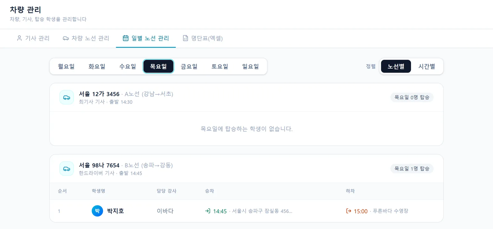
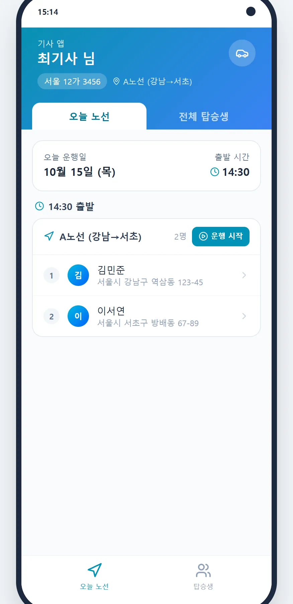

현장에서 들은 이야기
이런 불편, 겪고 계시죠
출석부 따로 차량 따로 신청하고 관리하다보니 하나가 틀어지면 일이 커짐.
수영 강사 · 서울 중랑구 · 설문 응답어느 차량 탑승하고 어느 지역 사는지 편하게 조회할 수 있으면 좋을 듯 합니다.
수영 강사 · 서울 성북구 · 설문 응답이렇게 사용해요
네 단계면 끝나요
- 차량·노선 등록
차량 번호, 정원, 운행 지역, 출발 시간, 담당 기사를 등록해요.
- 학생 배정
만석이거나 운행 지역이 아닌 학생은 배정 단계에서 막아요.
- 요일별 명단 자동 생성
여러 반에 다니는 학생도 그 요일 반 기준으로 명단이 만들어져요.
- 기사 앱으로 운행
정류장 순서대로 명단을 보고 운행을 시작·종료하면 기록이 남아요.
결석·보강이 명단에 바로 반영돼요
학부모가 결석을 신청하면 그날 탑승 명단에서 자동으로 빠지고, 출발한 뒤에 결석이 생기면 기사님께 바로 알림이 가요.
- 결석 학생 자동 제외
- 노선별·시간별 보기
- 명단 엑셀 다운로드
기사님은 앱 하나로
정류장 순서대로 탑승 학생을 보고, 학생을 누르면 보호자에게 전화해요. 명단에 없는 아이 기록과 차량 고장 신고도 앱에서 바로 해요.
- 정류장 순서 명단
- 명단 외 아이 기록
- 고장 신고 → 데스크·원장 알림

운행·비용·정비까지
날짜별 운행 배정·결행·대차를 관리하고, 운행 거리와 유가로 차량별 기름값을 계산해요. 정비 이력도 함께 남아요.
- 운행 배정·결행·대차
- 차량별 기름값 계산
- 고장·정비 이력
자주 묻는 질문
궁금한 점
요일마다 다른 반에 다니는 학생은요?
요일별로 그날 다니는 반 기준으로 탑승 명단이 만들어져요.
학부모에게도 차량 안내가 가나요?
전날 학부모에게 다음 날 승차 시각과 장소를 안내하고, 정류장이 바뀌면 변경 안내가 가요. 학부모는 앱에서 승하차 변경도 신청할 수 있어요.
노선을 바꾸면 기사님이 알 수 있나요?
데스크가 정류장이나 순서를 바꾸면 기사 앱에 "노선이 바뀌었어요" 알림이 떠요.
기사님은 어떻게 가입하나요?
차량 관리에서 기사 초대코드를 발급해 보내면, 기사 앱에서 코드를 넣고 바로 시작해요.
통학 차량 관리, 30일 동안 무료로 써 보세요
강습생 수 제한 없이 모든 기능 · 초기 세팅 무료
화면은 SwimSync 체험용 예시 데이터로 찍었어요. 실제 이름·금액이 아니에요.